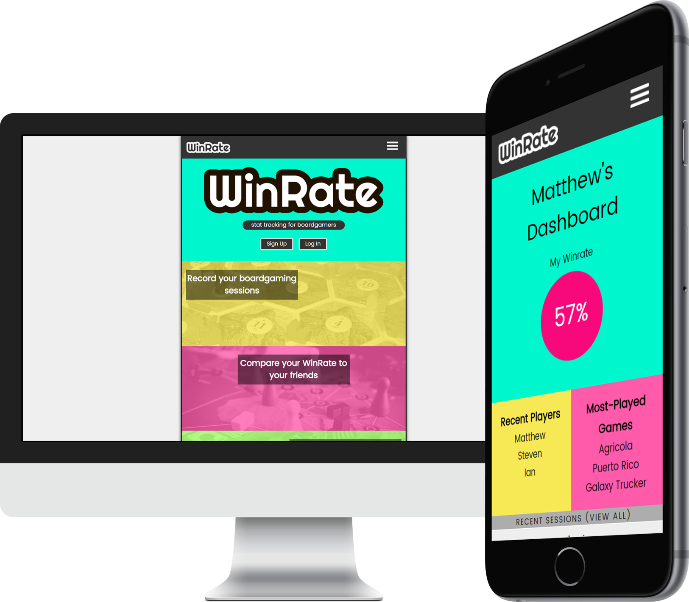
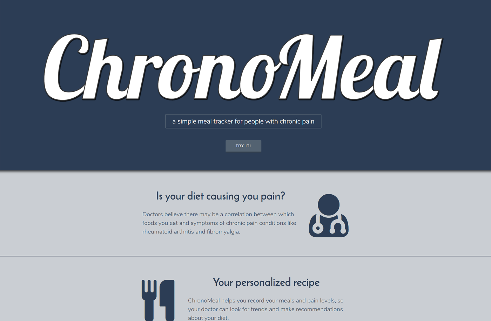

About Me
I'm a web developer who is passionate about problem-solving. I love learning new technologies and applying them to real-world situations, figuring out how they work and how to make them work for me. I also care deeply about UI/UX - design and usablity are important to everything I work on.
Apart from coding, I love exploring the city of Raleigh - awesome new places pop up every week! I also enjoy geocaching, tinkering with virtual reality, and spending time with my dog Arden.
Projects
WinRate
WinRate is a full-stack application that allows users to journal their boardgaming sessions and view statistics for themselves and their friends. The frontend is a single-page React app, and is served by a backend REST API.
- React
- Redux
- NodeJS
- Express
- MongoDB
- PassportJS
- ES6
ChronoMeal API
Chronomeal allows people with chronic pain to record their meals and pain levels, so they or their doctor can look for trends over time. It was created in partnership with Johnathan Howell, who developed the frontend, while I produced a REST API to store and serve the users' data.
- TypeScript
- NodeJS
- Express
- PassportJS
- MongoDB